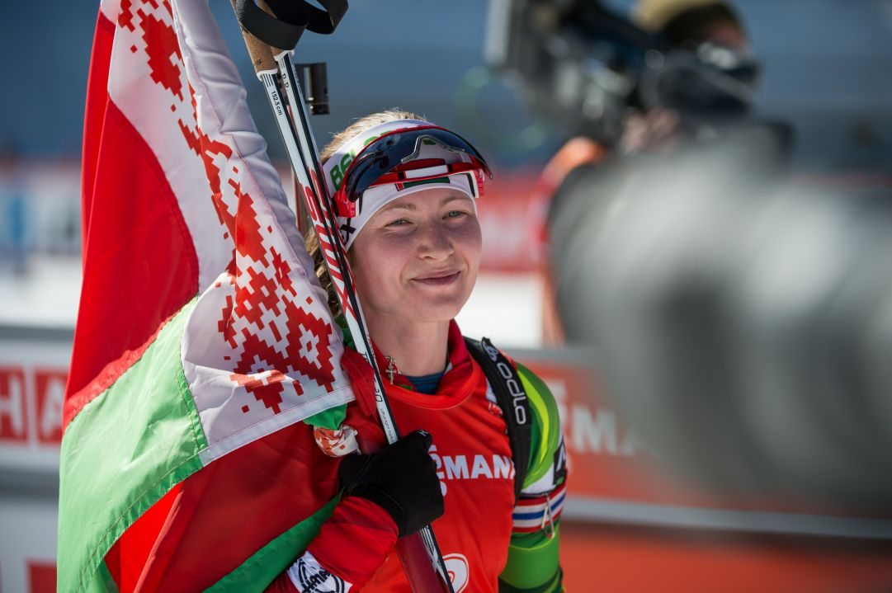

Women's History
Darya Domracheva

Darya Uladzimirauna Domracheva (Born 3 August 1986) is a retired Belarusian biathlete and coach who competed in the Biathlon World Cup from 2006 to 2018. She won a gold medal in the 4x6 km relay and a silver medal in the mass start competition at the 2018 Winter Olympics, three gold medals in the pursuit, individual, and mass start competitions at the 2014 Winter Olympics, and a bronze medal in the individual competition at the 2010 Winter Olympics.
After becoming the first female biathlete in history to win three titles at the same Olympic Winter Games at Sochi 2014, Darya was absent from the competitive arena for a long period due to illness.